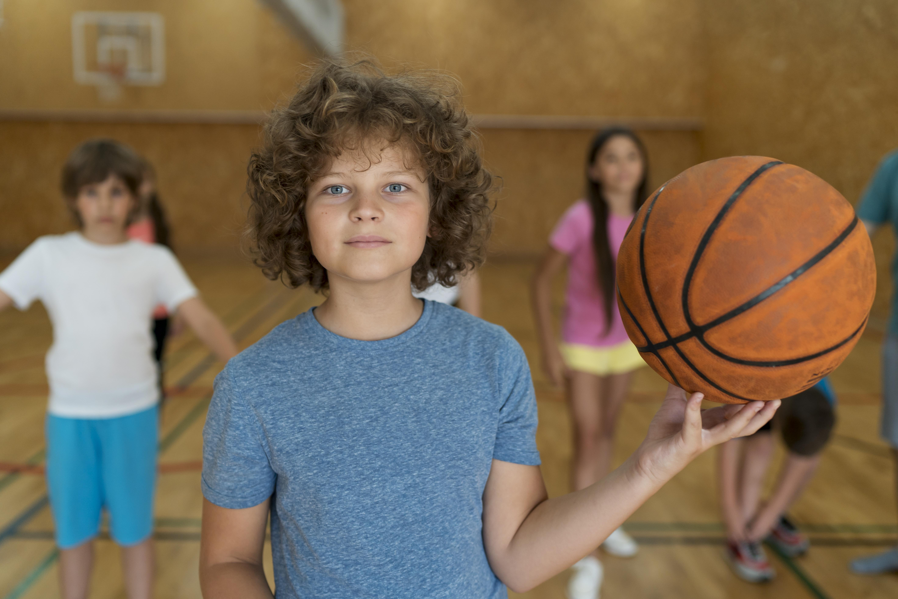

Fútbol

El fútbol es una actividad deportiva muy popular entre nuestros alumnos. Fomenta el trabajo en equipo, la coordinación y el desarrollo de habilidades motrices.
Atletismo

El atletismo es una disciplina que incluye carreras, saltos y lanzamientos. Nuestros alumnos tienen la oportunidad de participar en competiciones escolares y mejorar su resistencia y velocidad.
Baloncesto
El baloncesto es un deporte que combina habilidades físicas y estrategia. Los alumnos aprenden a driblar, pasar y encestar, además de desarrollar su capacidad de concentración y toma de decisiones.
Natación

La natación es una actividad acuática que fortalece el sistema cardiovascular y mejora la resistencia física. Nuestros alumnos aprenden técnicas de nado y participan en competiciones internas.